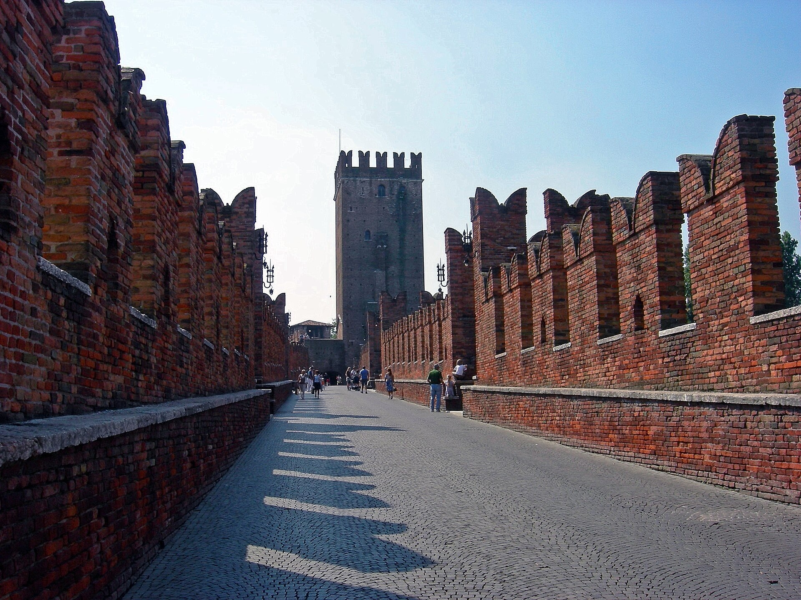

1354-1357 年坎格兰德二世建的红砖要塞：既是防外敌的堡垒，更是斯卡利杰罗家族防“自家市民”的居所--城堡与后面的斯卡利杰罗桥构成一条随时可逃的退路。1954-1973 年，建筑师卡洛·斯卡帕的博物馆化改造让它成为“古代与现代对话”的世界级案例。
看点路线
Il Percorso
- 1先看整体：城堡+桥+河湾的“退路系统”从对岸看最清楚
- 2进博物馆找斯卡帕的细节：展品与墙体之间的“缝”、材质切换、光的方向
- 3斯卡利杰罗桥走一个来回：拱券跨在河道最窄处
- 4博物馆高层的阿迪杰河景窗：斯卡帕开的“画框”
重点展品与看点
Il Castello · 6 件必看
坎格兰德骑马像（原作）
维罗纳最著名的哥特雕塑：笑容神秘的大公骑马腾跃。原作原立于斯卡利杰罗家族墓园，在博物馆的斯卡帕展室里以 45 度仰角陈列--那个倾斜是斯卡帕的设计：让你体验“墓园地面仰望”的原始视角。
斯卡帕的“缝”
全馆最值得看的是“展览方式”本身：斯卡帕坚持让中世纪墙体与现代展陈之间留出可见的缝隙与材质对比--古代与当代“握手但不拥抱”。这套语汇后来影响了全世界的历史建筑博物馆改造。

斯卡利杰罗桥
城堡的后门桥：最高的桥拱下是阿迪杰河主河道。1945 年 4 月撤退德军将其炸毁，1951 年维罗纳人用从河里捞回的原石重建--“从河里捡回一座桥”是这座城市最硬核的修复故事。
弑亲者之堡
建堡的坎格兰德二世是斯卡利杰罗家族最暴戾的一位：弑兄上位、把叔叔吊死在城堡里。城堡的功能设计暴露了当时的主人与市民的关系--护城河朝向城里的一侧更深。
武器与骑士盔甲
馆藏的武器盔甲与骑士文化陈列是北意最丰富之一。斯卡帕把它们悬挂在暗色木架上、配精准射灯--每一件都像刚卸下来的战备。
皮萨内洛与维罗纳画派
馆藏绘画的核心：国际哥特大师皮萨内洛的素描与祭坛画残件，及维罗纳本地画派的作品序列--曼特尼亚的故乡画坛，比威尼斯画派早一代的源头。
历史故事
Le Storie
壹防市民的城堡
Castelvecchio（1354-1357）的设计逻辑很直白：坎格兰德二世不仅要防外敌，更要防自己城里的市民--他与维罗纳人的关系烂到需要一条随时可逃的退路。
城堡背后的斯卡利杰罗桥（Ponte Scaligero）就是这条退路：一旦城中生变，家族可穿城堡、过桥、直奔北方领地。一座城堡的"后门"比正门更重要。
贰弑亲者坎格兰德二世
建堡者坎格兰德二世是斯卡利杰罗家族最暴戾的一位：1350 年弑兄 Fregnzio? 上位（实际是他谋杀了兄弟？），其后把叔叔吊死在城堡内。
他的统治以"把家人当敌人"著称--这座城堡是他的世界观的建筑版本：孤立、防御、随时准备逃跑。1360 年他最终被自己的弟弟? 刺杀（实际上是他的兄弟 Cansignorio 参与谋杀）。
叁1945：德军炸桥
1945 年 4 月 24 日，撤退的德军炸毁了阿迪杰河上几乎所有桥梁（只留下 Ponte Nuovo），包括斯卡利杰罗桥。
维罗纳人没有放弃这座桥：战后从河底打捞回散落的原石，按编号重新拼合，1951 年完工--"从河里捡回一座桥"。今天走桥上还能看到部分石块上的钢印编号。
肆斯卡帕的"缝隙"
1954-1973 年，建筑师卡洛·斯卡帕受命将城堡改造为博物馆。他的做法：不掩盖古代与现代的边界，而是把"缝"做出来--新展墙与旧墙之间留出可见间隙，新地面与旧地面用不同材质。
这套语汇后来影响了全世界的历史建筑博物馆改造："古代与当代握手但不拥抱"。Castelvecchio 因此成为建筑系学生的必修现场课。
伍坎格兰德骑马像的"倾斜"
博物馆的核心展品是 14 世纪的坎格兰德一世骑马像（原立于斯卡利杰罗墓园）--笑容神秘的大公腾跃在马上。
斯卡帕把它陈列在一个特殊的角度：像体略倾斜、观众仰视--复原它在墓园地面上被仰望的原始视角。展品不再是"平视的标本"，而是"回到语境的雕像"。
陆斯卡利杰罗家族的兴亡
斯卡利杰罗家族（Della Scala / Scaligeri）统治维罗纳 1277-1387：从 Mastino I 到 Antonio，七代领主把维罗纳从一座城市变成北意强权。
家族的墓园（Arche Scaligere）就在老城中心：哥特式的阶梯墓像一座"石头家谱"。Castelvecchio 是他们最后的堡垒--1387 年家族末代领主被米兰 Visconti 逐出，城堡随后易主威尼斯。
柒威尼斯、拿破仑与奥地利
1405 年威尼斯和平接管维罗纳，Castelvecchio 改为军营与仓库。1797 年拿破仑来了又走，1814-1866 年奥地利人接管--城堡变成了帝国军队的兵营。
一段"军事建筑的一生"：1357 年建成到 20 世纪初，它几乎没有民用过。1925 年起改为市立博物馆，1954 年斯卡帕接手改造--从堡垒到艺术馆的"再就业"。
捌皮萨内洛与维罗纳画派
馆藏绘画的核心是国际哥特大师皮萨内洛（Pisanello）与维罗纳画派的作品。曼特尼亚就是从这一画派的土壤里长出来的。
皮萨内洛的素描（打着猎豹与骑士纹章的铅笔稿）是博物馆最安静的一厅--15 世纪贵族生活的"速写本"，细致到每一根缰绳。
玖武器厅的灯光
武器盔甲陈列是北意最丰富之一：14-16 世纪的剑、甲、弩与骑士盔甲。斯卡帕把它们悬挂在暗色木架上、配精准射灯--每一件都像"刚卸下来的战备"而非"入柜的标本"。
陈列的方式本身就是叙事：你会感到这些武器不是"过去的东西"，而是"随时可以再次拿起来的东西"。
拾阿迪杰河的"画框"
斯卡帕在博物馆高层开了一扇大窗正对阿迪杰河与斯卡利杰罗桥--这扇窗被称为"斯卡帕的画框"：建筑与风景被框成一幅活着的画。
傍晚走到这扇窗前：河面的光、桥的拱影与远处的钟楼同时入框--建筑师用一扇窗完成了从展品到城市的空间叙事转换。
参观贴士
Consigli Pratici
- 博物馆动线复杂（斯卡帕有意为之），拿一份馆方地图，否则容易漏掉坎格兰德像
- 想拍“城堡+桥”全景：从对岸的 Lungadige 路边或 Ponte Pietra 上游侧
- 桥上夜灯很美：晚饭后散步来拍夜景（桥 24 小时开放）
- 周一上午不开（13:45 起），排行程注意
- 对古建修复感兴趣的话，这馆值得 2 小时--它本身是建筑系的教科书现场
顺路同游
Da Non Perdere